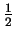
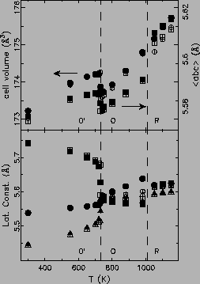
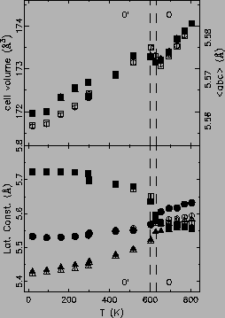
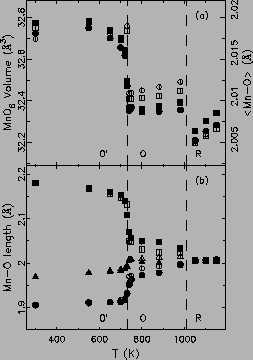
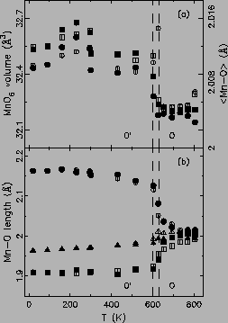

(aO - bO - cO), cH = 2aO + cO. So that 18ceq2 = cH2 + 12aH2, where the subscripts H and O denote the orthorhombic and rhombohedral phase, respectively. The experiment data clearly show the JT transition temperature TJT around 735 K for LaMnO3(A), and 610 K for LaMnO3(B), indicated by vertical dashed lines in Fig. 3.20, where the sample goes from the O|
  |
Another signature of this JT transition is the disappearance of the
MnO6 octahedral JT distortion upon
warming. Fig. 3.21 shows how the three
``orthogonal'' Mn-O bond lengths within one
MnO6 octahedron, their average, and the MnO6 octahedral volume
evolve with temperature. Clearly, in the low T O phase, the
MnO6 octahedron is fully JT distorted with two long, two medium,
and two short bonds. This is not contradicting the local structure
results where only two Mn-O bonds were observed. The reason is
that the short and medium Mn-O bonds are not directly resolved in the
experimental PDFs, as the Mn-O peak is shown as a doublet (not a
triplet) in Fig. 3.18. It is the same reason why
one Gaussian curve was used to fit these two shorter
bonds (in Fig. 3.19). It is also self-consistent that
the low r Gaussian curve appears to have an area twice as large as
the high r one. In the average structure, upon the JT transition,
the difference between those long and short bonds reduces drastically,
which is what we expect from this O
phase, the
MnO6 octahedron is fully JT distorted with two long, two medium,
and two short bonds. This is not contradicting the local structure
results where only two Mn-O bonds were observed. The reason is
that the short and medium Mn-O bonds are not directly resolved in the
experimental PDFs, as the Mn-O peak is shown as a doublet (not a
triplet) in Fig. 3.18. It is the same reason why
one Gaussian curve was used to fit these two shorter
bonds (in Fig. 3.19). It is also self-consistent that
the low r Gaussian curve appears to have an area twice as large as
the high r one. In the average structure, upon the JT transition,
the difference between those long and short bonds reduces drastically,
which is what we expect from this O to O (pseudo-cubic) phase
transition. The JT transition is confirmed to be orbital
order-disorder type as the local JT distortion persists at all
temperatures. The anomalous change of the Mn-O bond lengths in the
average structure comes from the orientational disorder of the
distorted MnO6 octahedra in the O phase, while the MnO6 octahedra always lay their long Mn-O bonds in the ab plane in the
O
to O (pseudo-cubic) phase
transition. The JT transition is confirmed to be orbital
order-disorder type as the local JT distortion persists at all
temperatures. The anomalous change of the Mn-O bond lengths in the
average structure comes from the orientational disorder of the
distorted MnO6 octahedra in the O phase, while the MnO6 octahedra always lay their long Mn-O bonds in the ab plane in the
O phase. In both Fig. 3.20
and 3.21, the OR transition of the sample LaMnO3(A)
is also identified to occur around 1010 K in agreement with early DTA
results. In the R phase, MnO6 octahedra are strictly normal with
six equi-distant Mn-O bonds, and the lattice symmetry becomes
hexagonal. No anomaly is observed on the cell volume, however, the
volume of the MnO6 octahedron collapses again. This most probably
indicates the structure experiences two relaxation steps: JT and OR
transition. The lattice relaxation introduces more disorder, and thus
results in ``seemingly'' reduced volumes across both phase
transitions.
phase. In both Fig. 3.20
and 3.21, the OR transition of the sample LaMnO3(A)
is also identified to occur around 1010 K in agreement with early DTA
results. In the R phase, MnO6 octahedra are strictly normal with
six equi-distant Mn-O bonds, and the lattice symmetry becomes
hexagonal. No anomaly is observed on the cell volume, however, the
volume of the MnO6 octahedron collapses again. This most probably
indicates the structure experiences two relaxation steps: JT and OR
transition. The lattice relaxation introduces more disorder, and thus
results in ``seemingly'' reduced volumes across both phase
transitions.
|
  |
Therefore, both the JT and OR phase transitions have been confirmed on our samples, and are consistent with the published literatures. Average structure analysis with combined PDF and Rietveld methods has been shown to have quantitative agreement. LaMnO3 in high temperature O and R phases shows no JT distortion on the average structure. In the context of the existence of local JT distortions at all temperatures, the O and R phases are orbital disordered.